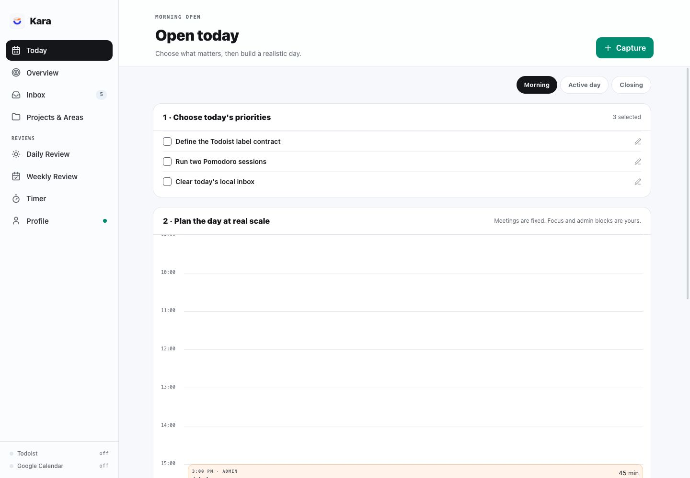
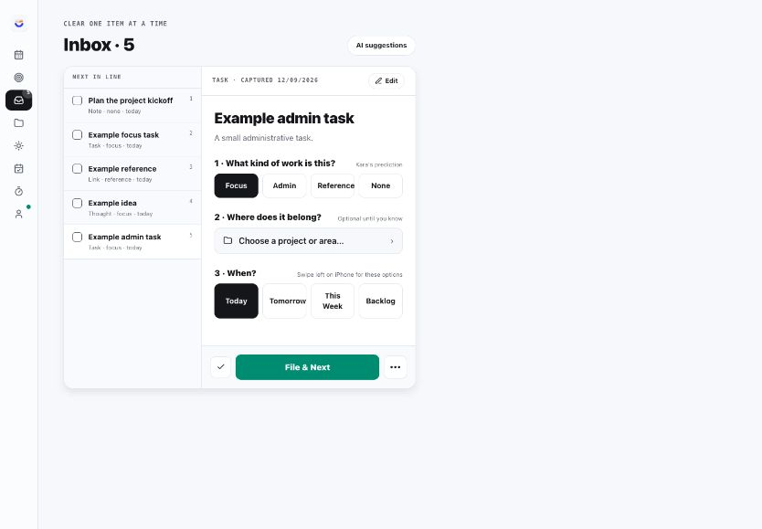
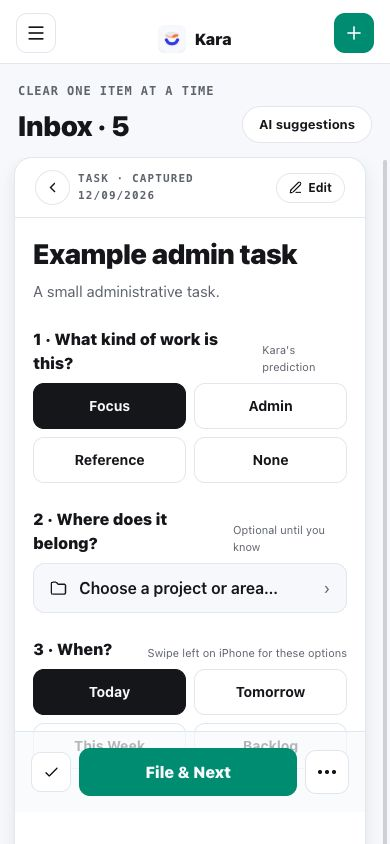

Deep Focus productivity. One place for today's priorities, agenda, inbox triage and weekly review, on Mac, iPhone and iPad, with a Telegram agent doing the legwork.
Kara is the Deep Focus productivity system: one place that answers "what should I be doing right now?" It connects priorities, calendar events, captured tasks, projects, and the working day across the Mac desktop app and the iPhone and iPad app.
Tasks live in Todoist underneath, meetings stay in Google Calendar, and Kara keeps the useful working context around them.
Today has three moments on one surface. Morning connects the week to today's priorities and lets you arrange focus and admin blocks against the real calendar. Active day is the quieter execution view. Closing gives every remaining open loop a destination. Missing one of these moments never blocks Today.
On iPhone, use the top-left menu for Today, Inbox, Projects, Weekly Review, Timer, and Profile. The bottom control inside Today switches only between Morning, Active, and Closing. On iPad and desktop, use the sidebar.

Choose the work that realistically belongs today, then place it against the day's real time scale. Meetings keep their calendar time. Focus and admin blocks contain tasks and may be moved or created here. Tasks selected from All open tasks enter Today's unplaced backlog until you place them in a block.
Run the agenda in time order. Focus and admin blocks expose their tasks. Meeting actions open the agenda, open Calendar, or skip the meeting without changing the calendar event. Tasks added during Active day enter the Unplaced today tray, where they can be placed into an existing block. New blocks are created in Morning, not in Active day.
Each unfinished item receives the same choices: Done, Tomorrow, Project, Waiting for, or Keep open. The Inbox count links directly to Inbox so it can be cleaned before closing. A note for tomorrow is optional and is also available during Active day.
Inbox contains captures that still need clarification. It is separate from All open tasks, Today's unplaced backlog, and the open loops shown in Closing.
For each item, confirm three things:
Kara predicts these values when it can, but every value remains editable. The completion circle archives the task. Edit changes its title and description. File & Next files the current task and immediately advances to the next item in the queue.

On iPhone, swipe left to reveal timing choices. Swipe right partway for File & Next, Decide later, or Delete. A full right swipe accepts the predictions and files the item. Tap an item when you need to correct its work kind or project or area.

Capture is available from the global header. A task sent to Inbox waits for clarification. A task sent to Today enters Today's unplaced backlog. A task sent to a project is filed there. Captures remain visible in All open tasks, and unresolved captures appear again during Closing.
Desktop releases arrive through Kara's one-click updater. iPhone and iPad builds arrive through TestFlight. Every user-visible release is documented on the release notes page.